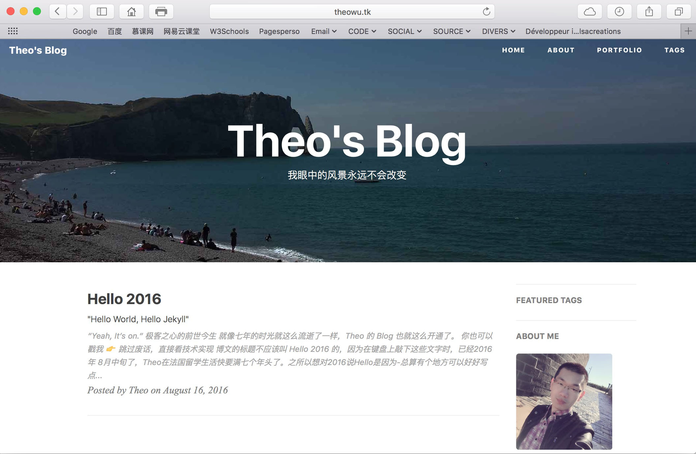
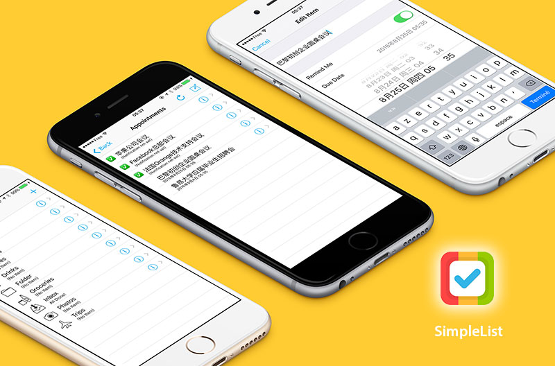
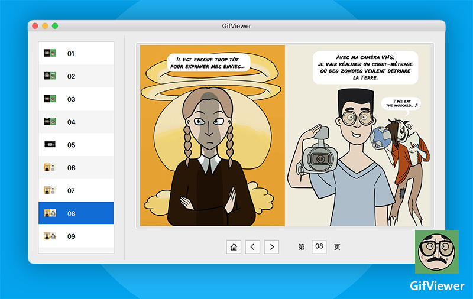
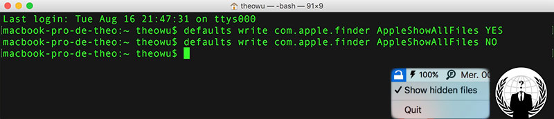

-
- Skills. 技能清单
语言技能
-
法语 : 六年留学生涯用语，持有 DAFL C2 语言等级证书
能够流利地进行法语书面和口头交流
可无字幕观看并听写各类法语视频
能流畅阅读法语专业书籍、技术文档及其他资料
-
英语 : 第二外语，读写程度均较好，曾经获取 TOEIC 企业英语认证证书
能够书写英文邮件，可以在 Stack Overflow 正常交流
可无字幕观看 MOOC 课程、开发者大会视频
能流畅阅读英文专业书籍、技术文档及其他资料
IT 技能
-
开发环境
熟练掌握 Xcode，Git，GitHub，Sublime Text，Visual Studio 等
熟练使用各大操作系统：Mac OS X，Windows，Linux，ChromeOS，iOS，Android
-
Swift
熟悉 Swift，了解 UIKit，SpriteKit，MapKit
熟悉 Autolayout，StoryBoard，能快速学习第三方开发类库
能应用MVC模型，运用模块化、面向对象的方式编程
-
HTML / CSS
能编写语义化的 HTML，模块化的 CSS，完成简单的布局
有UI设计师应有的品味和工匠精神
-
其他
了解 Objective-C，C#，Java，JavaScript，SQL 等
了解 Jekyll，能够熟练使用 Markdown 进行写作
熟练使用 Adobe Photoshop，Adobe Premiere Pro 等设计软件
熟练使用 Microsoft Office，OpenOffice，Pages，Excel 等办公软件
苹果重度用户，学习能力强，以上绝大多数的技能都是毕业之后自学习得
-
- Experiences. 项目&经验
个人项目
-
Theo's Blog 个人博客（2016年8月） 源代码
设计简约的个人博客。通过 Jekyll 主题修改 HTML CSS 部分，重构部分代码，进行内容维护
 -
iOS Application: SimpleList（2016年7月） 源代码
学习并模仿 Ray Wenderlich 网站教程编写的一个 todolist 类型的 App
 -
Mac Application: GifViewer（2016年6月） 源代码
一个把多个 gif 文件打包在一起阅读的Gif阅读器，灵感来自 Ray Wenderlich 网
 -
Mac Application: MenubarHide（2016年5月） 源代码
一个通过菜单栏隐藏或者显示系统隐藏文件的小应用

工作经验
-
对外法语教学见习教师 (2015年2月-4月)
在鲁昂政治避难人员接待中心担任对外法语教学见习教师，负责初、中级法语班授课
-
自动化技术实习生 (2012年4月-6月)
于米其林公司克雷蒙费朗总部担任自动化技术实习生
负责轮胎橡胶生产线终端一个激光测距系统的自动机编程
负责画电路图，撰写法语和英语的相关技术文档
-
助教与技术支持 (2009年7月-8月)
于南京法语联盟江苏教育国际预科学院担任助教与技术支持
负责协助法籍教师使用电子工具和数字教学系统，进行班级管理
-
- Educations. 教育背景
-
自学iOS开发，网络开发 (2015年-2016年)
通过网络资源自学 Swift，Xcode，HTML / CSS，JS，SQL 等技术
-
鲁昂大学语言学专业法语传播方向硕士 (2013年-2015年)
-
鲁昂大学语科学专业对外法语教学方向学士 (2012年-2013年)
-
洛林理工大学南锡科技学院电气工程及工业信息化专业大学科技文凭 (2010年-2012年)
-
- Hobbies. 兴趣爱好
-
IT 互联网 : 移动开发，网络开发，前端后端，社会化营销
-
商务贸易 : 项目运营，市场调查，商务谈判，物流，采购，进出口贸易
-
体育运动 : 乒乓球，慢跑，游泳